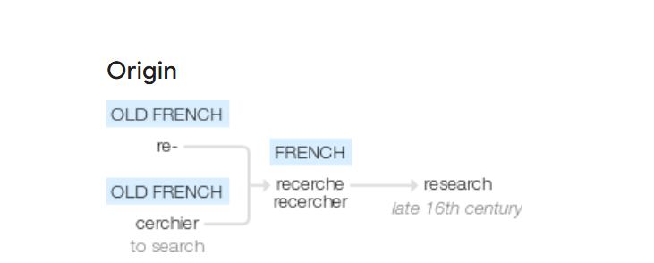

| Characteristics | Quantitative.Research | Qualitative.Research |
|---|---|---|
| Ontology | Assumes reality is single, tangible, and fragmentable | Assumes that realities are multiple, socially constructed, and holistic |
| Epistemology | An etic view in epistemology where researchers are outsiders of what is being investigated, cannot influence or be influenced by what is being investigated to find the truth that is objectively measured | An emic view in epistemology where interactions between researchers and participants or what is being investigated, understand it only through their perceptions and interpretations |
| Axiology | Makes a distinction between facts and values, facts are viewed as objective truth whereas values are seen as subjective which can be inherently misleading | Researcher reports their values and biases they bring to the study as well as the value-laden nature of data they gather |
| Focus Area | Deals with numbers and statistics,used to test or confirm theories and assumptions | Focuses on understanding concepts, thoughts, or experiences by exploring worda and meanings |
| Approach | Deductive reasoning, start with research questions and hypotheses, conduct interventions, and analyze the results in terms of either supporting or not supporting the hypotheses. | Inductive reasoning, researchers provide their interpretations of what is being investigated, seeks to understand a phenomenon through an in-depth description of it from researchers’ and participants’ perspectives |
| Methods Employed | Observational or Experimental Designs | Phenomenology, Ethnography,Grounded Theory |
| Data Collection | Questionnaires, surveys, interview schedule | Participant/ Non-Participant Observation, Open-ended, unstructured/ semi structured interviews, Focus Group Interviews, Review of documents, testimonies etc. |
| Sampling Strategy | Random Sampling,construct a sample that can be an unbiased representation of the population | Purposive, Convenience, Snowball Sampling,a sample that can provide rich information to understand the phenomenon |
| Data Analysis | Statitical tests and Modelling | Transcription verbatim, coding, content or thematic analysis |
| Presentation of Findings | Descriptive or inferential numerical forms with tables and graphs | Verbatim Quotes, categories,themes,conceptual frameworks |
| Core Principles | Objectivity and Generalizability | Credibility, transferability, dependability, and confirmability |
1 Introduction to Research
1.1 Research: Etymology & Definition
The goal of this session is to explore the origin of the word ‘research’ and to elucidate its definition..
1.1.1 Origin of the Word ‘Research’
The word research traces its origin to the Middle French term rechercher which translates to search again.

This verb is composed of the Old French prefix “re-” meaning “again” and “cerchier” which means “to search.” Therefore, “research” originally conveyed the idea of revisiting or closely examining something.
1.1.2 Defining Research
Research may be defined as the creation of new knowledge and/or the use of existing knowledge in a new and creative way so as to generate new concepts, methodologies and understandings. This could include synthesis and analysis of previous research to the extent that it leads to new and creative outcomes.
Research is the cornerstone of human advancement, serving as a systematic inquiry that seeks to uncover new information, validate existing knowledge, and solve complex problems. Unlike other species, humans possess the unique ability to document and share their findings, creating a continuous thread of knowledge that connects past discoveries to present inquiries. This cumulative nature of knowledge is essential; each generation builds upon the insights of those who came before, allowing for profound advancements in science, technology, the arts, and social understanding.
Let us visit few definitions given for research by luminaries in the field.
Research is an endeavor to discover, develop and verify knowledge. It is an intellectual process that has developed over hundreds of years, ever changing in purpose and form and always searching for truth.
- C Francis Rummel
Research is a point of a view, an attitude of inquiry or a frame of mind.It asks questions which have till now not been asked, and it seeks to answer them by following a fairly definite procedure. It is not a mere theorizing, but rather an attempt to elicit facts and to face them once they have been assembled. Research is likewise not an attempt to bolster up pre-conceived opinions, and implies a readiness to accept the conclusions to which an inquiry leads, no matter how unwelcome they may prove. When successful, research adds to the scientific knowledge of the subject.
- Robert Robertson Rusk
Both Rummel and Rusk emphasize the dynamic and inquisitive nature of research, though they approach it from slightly different angles. Rummel highlights the historical evolution of research as a continuous quest for truth, framing it as a rigorous intellectual process aimed at discovering and verifying knowledge. In contrast, Rusk focuses on the mindset and procedural rigor involved in research. He emphasizes the importance of questioning established norms and being open to unexpected findings. This definition stresses that research is not just about affirming existing beliefs but about genuinely seeking new knowledge through systematic inquiry.
To be sure the best research is that which is reliable, verifiable, and exhaustive, so that it provides information in which we have confidence. The main point here is that research is, literally speaking, a kind of human behaviour, an activity in which people engage.
- Francis G Cornell
Cornell, here adds another dimension by asserting that effective research must be reliable, verifiable, and exhaustive. This perspective emphasizes the credibility of research findings and their importance in fostering confidence. By characterizing research as a form of human behavior, Fourier highlights its collaborative and social aspects, recognizing that research involves interaction and engagement among individuals.
1.2 Philosophical Underpinnings of Research
The pursuit of knowledge is deeply rooted in philosophical inquiry, shaping the very foundation of research. Understanding the philosophical underpinnings of research is essential for scholars and practitioners alike, as it informs the way we approach questions, interpret data, and derive conclusions.
Philosophy encompasses a range of inquiries into existence, knowledge, and values, each of which holds profound implications for research. By examining the epistemological, ontological, and axiological dimensions of inquiry, researchers can better appreciate the frameworks that guide their work.
Research, as we stated earlier, is discovering and validating innovative approaches to investigate and comprehend reality. By investigating reality, we mean to understand its nature and to gather knowledge about the reality and make sense about the same. This understanding of research takes us to the philosophical concepts of ontology, epistemology and axiology.
1.2.1 Ontology
Ontology is the study of being and existence. It concerns the nature and structure of reality and what entities exist in the world.
- It was called first philosophy by Aristotle.
- Origin comes from the Latin term ontologia, science of being.
The first stage in formulating research design is to articulate the ontology. In the most basic sense this means that you must articulate whether you see the world as objective or subjective.
Broadly ontology may be divided into two, which is discussed below.
1.2.1.1 Objectivist Ontology
The belief that the lives of others continue independently of our perceptions, and so can be measured. An objective perspective, views reality as composed of solid objects that can be consistently measured and tested, existing independently of perception. This approach assumes that universal principles and facts can be established through robust, replicable methods, as exemplified in physical sciences. It suggests that measurable attributes, like someone’s height, would yield the same results regardless of the observer.
1.2.1.2 Subjectivist Ontology
A subjective ontology posits that our perceptions shape reality, emphasizing the role of cultural, historical, and individual factors in shaping facts. This approach highlights the multiple experiences of reality based on individual differences, especially evident in social sciences. It suggests that reality varies with each person’s unique perspectives and interpretations, which can differ significantly across time and social contexts. Although it acknowledges the power of subjectivity, some argue that it paradoxically requires objectivity to claim its universality. Critics also argue that certain observable characteristics, like those of elements, seem independent of subjective interpretation.
The next stage in formulating research design is about the ways of gaining knowledge and it involves elucidating the process by which valid knowledge can be obtained. This entails a clear understanding of the nature and basis of knowledge claims, which is the essence of epistemology.
1.2.2 Epistemology
Epistemology is the study of knowledge, how we know what we know. It examines the nature, sources, and limits of knowledge.
In research, epistemological considerations affect the researcher’s approach to acquiring knowledge.An objective ontology is typically aligned with what is called a positivist (sometimes also referred to as, ‘foundationalist’) epistemological approach to knowledge, while subjectivity tends to be driven by an interpretivist (sometimes also referred to as ‘constructivist’) epistemology.This implies, positivist epistemology emphasizes objective measurements and observable phenomena, while an interpretivist epistemology focuses on subjective experiences and understanding human behavior.
1.2.2.1 Positivism
All knowledge regarding matters of fact is based on the “positive” data of experience. Strict adherence to the testimony of observation and experience is the all-important imperative of positivism. Positivism is most commonly associated with the natural sciences.It emphasizes objective measurements and observable phenomena.
1.2.2.2 Realism
An epistemological position that acknowledges a reality independent of the senses that is accessible to the researcher’s tools and theoretical speculations. It implies that the categories created by scientists refer to real objects in the natural or social worlds.
1.2.2.3 Critical Realism
A realist epistemology that asserts that the study of the social world should be concerned with the identification of the structures that generate that world. Critical realism is critical because its practitioners aim to identify structures in order to change them, so that inequalities and injustices may be counteracted.
1.2.2.4 Interpretivism
An epistemological position that requires the social scientist to grasp the subjective meaning of social action, it focuses on subjective experiences and understanding human behavior.
1.2.3 Axiology
Axiology is the study of values and ethics. It explores what is considered valuable, including moral principles and aesthetic judgments.It refers to the researcher’s understanding of values and their role in research. It examines values, deals with issues of right and wrong and measures the level of development and types of perceptual biases.
Values thus inform the bias, which a researcher as an individual can bring to the research project.
Values reflect either the personal beliefs or the feelings of a researcher.There are numerous points at which bias and the intrusion of values can occur. Values can materialize at any point during the course of research. The researcher may develop an affection or sympathy, which was not necessarily present at the outset of an investigation, for the people being studied. It is quite common, for example, for researchers working within a qualitative research strategy.
Axiology also makes the researcher consider the ethical questions involved in conduct of research. This is further dealt in detail in the chapter Ethics in Research.
1.2.4 Methodology
As we progress in our exploration of research foundations, we transition from the core concepts of ontology, epistemology, and axiology, which form the philosophical bedrock of research, to understanding the two principal research paradigms or methodologies - Quantitative & Qualitative Methodologies.
This shift allows us to apply these abstract principles into actionable frameworks that guide the structure and execution of research studies. By understanding the major difference in Qualitative and Quantitative methodologies, we align our philosophical perspectives with practical strategies that dictate how we collect, analyze, and interpret data.
1.2.4.1 Differentiate Quantitative & Qualitative Research Methodology
1.3 Research as a Process
This session delves into the multifaceted nature of research, highlighting it not merely as a task, but as a dynamic process that evolves with each step taken. From the initial spark of curiosity that prompts inquiry to the rigorous analysis that leads to insights, research is a blend of creativity and critical thinking.
As we navigate this chapter, we will explore the stages of research or the steps involved in the research process, from identifying a problem and conducting a literature review, to designing methodologies, gathering data, and interpreting results. Each phase is not just a box to tick, but an opportunity for learning and adaptation. By understanding research as a process, we can appreciate the challenges and triumphs that shape our findings and contribute to the broader landscape of knowledge.
Without further ado let us enlist the steps involved in research process.
1.3.1 Steps in Research Process
Familiarity with the steps involved in the research process enhances the rigor of the research. Each stage, contributes to the validity of the findings and following established procedures reduces bias and increases the reliability of results.
Let’s enlist the steps one by one.
- Identifying the Research Problem
The research journey begins with the identification of a specific problem or question. This step requires a clear definition of the issue at hand, ensuring that the research is focused and relevant. Engaging with existing literature can help refine the problem and clarify its significance.
- Reviewing the Literature
Once the problem is identified, a comprehensive literature review is conducted. This step involves analyzing existing studies, theories, and frameworks related to the topic. The insights gained from this review not only provide context but also highlight gaps in current knowledge, informing the research design.
- Formulating a Research Question or Hypothesis
Based on the literature review, researchers can formulate a hypothesis or a set of research questions. This step is crucial as it guides the direction of the study, framing what the researcher aims to discover or test. A well-defined hypothesis provides a clear focus for the research.
- Research Design
The next step involves designing the research methodology. This includes selecting appropriate research methods (qualitative, quantitative, or mixed-methods), determining data collection techniques, and establishing a plan for analysis. A well-structured methodology is essential for obtaining valid and reliable results.
- Data Collection
With the methodology in place, researchers proceed to collect data. This phase can involve surveys, experiments, interviews, or observational studies, depending on the research design. Effective data collection is critical, as it forms the foundation for analysis and interpretation.
- Data Analysis & Hypothesis Testing
After data collection, the analysis phase begins. Researchers employ statistical tools, qualitative analysis methods, or other techniques to interpret the data. This step reveals patterns, relationships, and insights, providing answers to the research questions or validating the hypothesis.
- Interpretation, Generalisation & Reporting
The final step is reporting the research findings. This includes writing a detailed report or paper, presenting at conferences, or publishing in academic journals. Sharing results is crucial for advancing knowledge and sparking further inquiry in the field.
1.3.2 Research as a Cyclical Process
Research is inherently iterative. The insights gained from interpretation can lead to new questions, hypotheses, or areas of interest. As researchers analyze their findings, they often uncover complexities that warrant further investigation, prompting a return to earlier stages of the research process.
flowchart TB A[Identifying the Research Problem] --> B(Reveiwing the Literature) B--> C(Formulating a Research Question or Hypothesis) C --> D(Research Design) D --> E(Data Collection) E --> F(Data Analysis & Hypothesis Testing) F --> G(Interpretation, Generalisation & Reporting) G --> A
Recognizing research as a cyclical process emphasizes that each study is part of a larger continuum of knowledge. Each cycle contributes to a deeper understanding of complex issues, fostering innovation and discovery. This perspective encourages researchers to embrace uncertainty and view each finding not as a conclusion, but as a stepping stone to new questions and explorations.